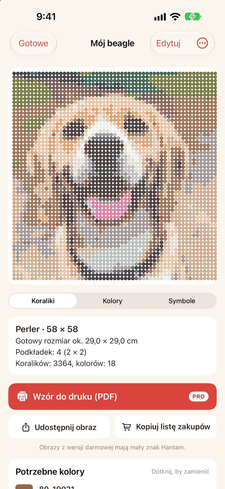
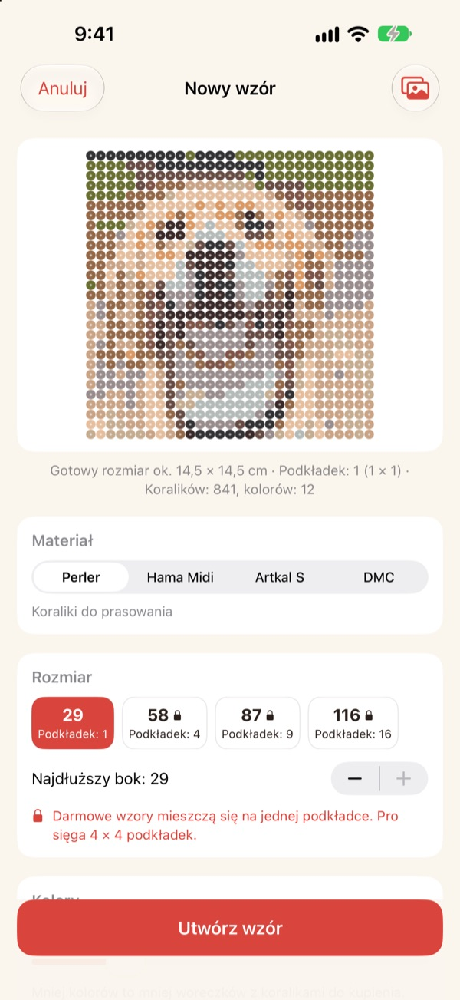
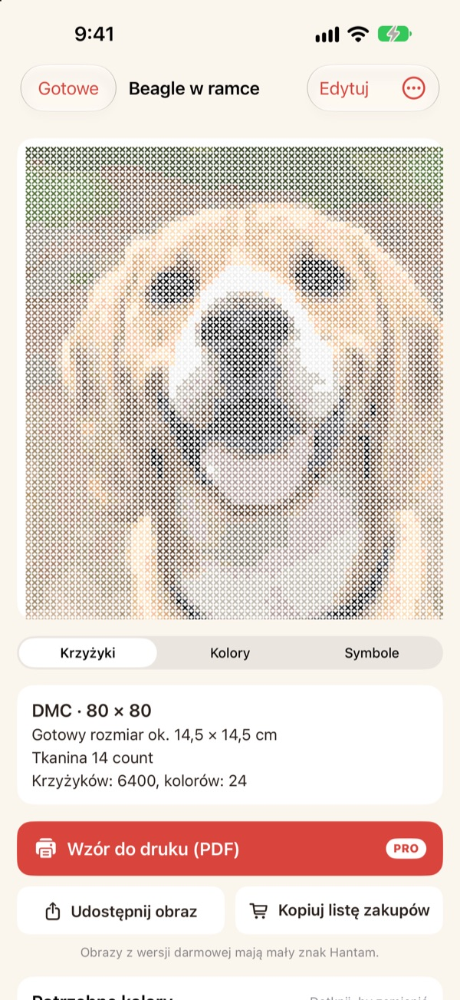
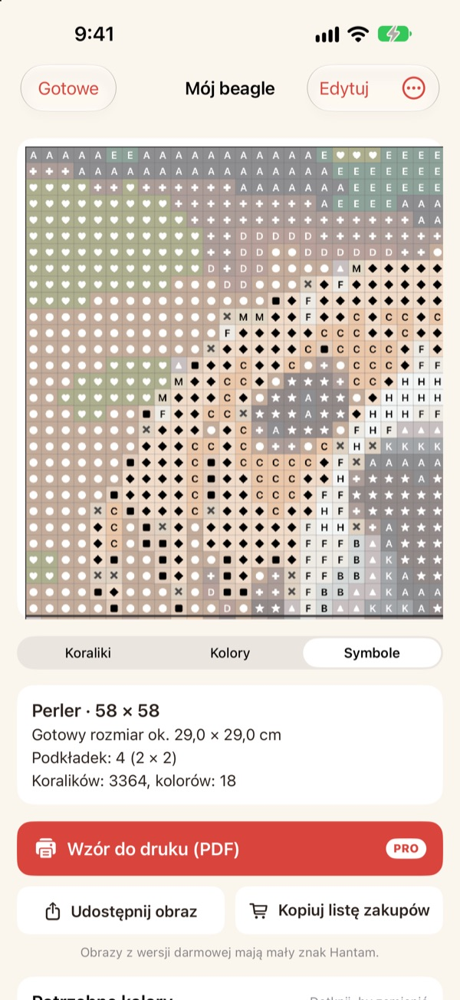
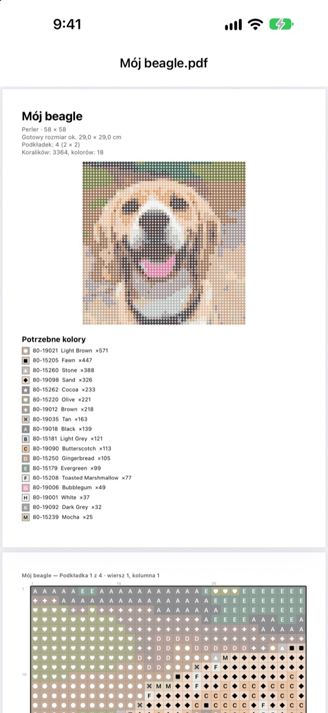

Jedno zdjęcie,
gotowy wzór
Wybierz zdjęcie swojego zwierzaka, siebie albo ulubionej postaci. Hantam zamieni je we wzór na koraliki do prasowania albo haft krzyżykowy w kolorach, które możesz kupić.
Wzory na jedną tablicę są za darmo. Zdjęcia nie opuszczają Twojego iPhone’a.

Wypróbuj na zdjęciu
To samo dopasowanie kolorów co w aplikacji, na prawdziwej palecie Perler. Zmień rozmiar i liczbę kolorów albo spróbuj z własnym zdjęciem.
Wzór zrobić łatwo. Trafić w prawdziwe kolory koralików już nie
Jeśli spikselujesz zdjęcie w zwykłym edytorze, wyjdą kolory, których nie ma żaden koralik ani żadna mulina. Potem zgadujesz, z którego pudełka jest każde pole, i liczysz, ile czego kupić. Hantam wybiera tylko spośród kolorów, które są w sprzedaży, i mówi dokładnie, ile potrzebujesz.
Prawdziwe kolory, prawdziwe numery
Wybierz koraliki Perler, Hama Midi, Artkal S albo mulinę DMC. Każde pole dostaje kolor, który ta marka naprawdę sprzedaje, razem z numerem.
Rozmiar i liczbę kolorów ustalasz sam. Duże wzory dzielą się na tablice 29 × 29.

Haft krzyżykowy też
Wybierz mulinę DMC, a to samo zdjęcie stanie się wzorem do haftu krzyżykowego. Wybierz kanwę Aida 11, 14, 16 lub 18, a Hantam pokaże gotowy rozmiar i liczbę krzyżyków dla każdego koloru.

Wiesz dokładnie, co kupić
Przełącz na wzór z symbolami i idź pole po polu, z grubą linią na każdej krawędzi tablicy albo co 10 krzyżyków. Zobacz, ile koralików potrzeba w każdym kolorze, i użyj Kopiuj listę zakupów jednym stuknięciem.
Stuknij pole, żeby je zmienić, albo zamień jeden kolor na inny w całym wzorze.

Wydrukuj i zaczynaj
Z Pro wyeksportujesz Wzór do druku (PDF): najpierw lista kolorów, potem wzory z symbolami, tablica po tablicy.

Trzy kroki do wzoru
- 1
Wybierz zdjęcie
Zwierzaki, twarze, logo, postacie, wszystko się nada. Najlepiej wychodzą zdjęcia z wyraźnym głównym motywem.
- 2
Wybierz koraliki lub mulinę
Ustal markę, rozmiar i liczbę kolorów.
- 3
Do dzieła
Pracuj według wzoru na ekranie albo wydrukuj go z Pro.
Materiały i rozmiary
- Perler · Hama Midi · Artkal S
- Koraliki do prasowania, tablice 29 × 29, koralik ok. 5 mm
- DMC
- Mulina do haftu krzyżykowego na kanwie Aida 11, 14, 16 lub 18
- Za darmo
- Koraliki do 1 tablicy (29 pól), mulina do 40 krzyżyków na dłuższym boku
- Pro
- Koraliki do 4 × 4 tablic (116 pól), mulina do 200 krzyżyków
- Kolory
- Od 2 do 50 w jednym wzorze
Perler, Hama, Artkal i DMC są znakami towarowymi ich właścicieli. Hantam nie jest z nimi powiązany. Kolory na ekranie mogą nieco różnić się od prawdziwych.
Zacznij za darmo. Duże wzory i druk w Pro.
Za darmo
- Wzory do jednej tablicy lub 40 krzyżyków
- Wszystkie marki: Perler, Hama, Artkal i DMC
- Liczba na kolor, lista zakupów i zamiana kolorów
- Do 3 zapisanych wzorów
- Udostępnianie obrazków z małym znakiem Hantam
Hantam Pro
- Wzory PDF do druku
- Do 4 × 4 tablic lub 200 krzyżyków
- Bez limitu zapisanych wzorów
- Obrazki bez znaku
- Wszystkie narzędzia do pixel artu
Subskrypcja miesięczna lub roczna albo jednorazowy zakup na zawsze
Pro możesz też podarować znajomemu prosto z aplikacji.
Najczęstsze pytania
Czy moje zdjęcia są gdzieś wysyłane?
Nie. Zdjęcia i wzory są przetwarzane i zapisywane tylko na Twoim iPhonie.
Kolory wyglądają trochę inaczej niż moje koraliki.
Ekran pokazuje kolory inaczej niż plastik i nici. Stuknij kolor na liście, aby zamienić go na bliższy odcień tej samej marki.
Jak duży może być wzór?
Za darmo mieści się na jednej tablicy 29 × 29 lub 40 krzyżykach na dłuższym boku. Z Pro do 4 × 4 tablic (116 koralików) lub 200 krzyżyków.
Jakie zdjęcia wychodzą najlepiej?
Z jednym motywem i prostym tłem. Im mniej kolorów, tym czystszy wzór, więc jeśli wynik wygląda chaotycznie, zmniejsz liczbę kolorów.
Czy nadal mogę robić pixel art?
Tak. Pikselizacja zdjęć, rysowanie według 110 wzorów i animacja klatka po klatce wciąż są w aplikacji. Wszystkie narzędzia do pixel artu są w Pro.
Jak przywrócić zakup?
Otwórz ustawienia w aplikacji i stuknij Przywróć zakupy. Użyj tego samego Konta Apple, na którym kupiłeś Pro.
Jak anulować subskrypcję?
Wejdź w Ustawienia iPhone’a › Twoje imię › Subskrypcje i wybierz Hantam. Dostęp na zawsze to jednorazowa płatność, która się nie odnawia.
Jak zgłosić błąd lub zaproponować pomysł?
Najszybciej wysłać opinię z ustawień aplikacji. Możesz też napisać na adres poniżej albo wysłać wiadomość na Instagramie (@lee25_ios).
Pytania, błędy i pomysły wysyłaj na leeo@kakao.com.